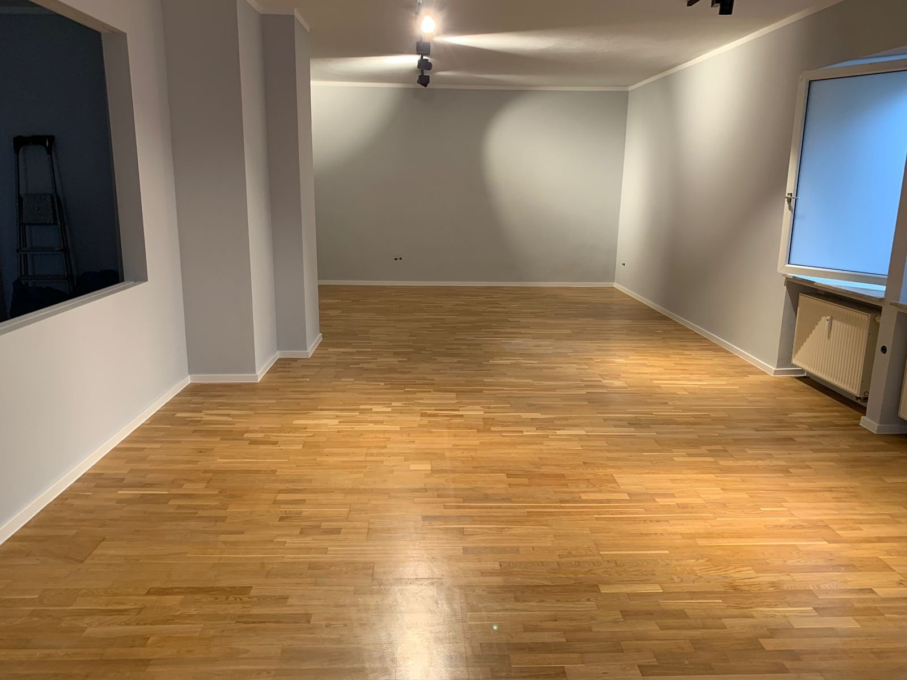

Wände & Decken
Ein frischer Anstrich verändert das ganze Raumgefühl. Wir besprechen mit Ihnen, welche Flächen gestrichen werden und welches Ergebnis Sie sich wünschen.
 MALERARBEITEN
MALERARBEITENMEL MALER · MALERARBEITEN
Manchmal braucht es nur den richtigen Farbton, damit sich ein Raum ganz neu anfühlt. Wir gestalten Ihre Wände und Decken – von dezent und zeitlos bis bewusst ausdrucksstark.
Malerarbeiten anfragen ↗
WAS WIR FÜR SIE TUN
Wir stimmen die Arbeiten auf Ihre Räume, Ihre Wünsche und die Gegebenheiten vor Ort ab.
Ein frischer Anstrich verändert das ganze Raumgefühl. Wir besprechen mit Ihnen, welche Flächen gestrichen werden und welches Ergebnis Sie sich wünschen.
Licht, Boden und Einrichtung beeinflussen, wie eine Farbe wirkt. Wir helfen Ihnen, Töne auszuwählen, die miteinander harmonieren.
Wir prüfen den Untergrund und stimmen notwendige Vorarbeiten wie das Ausbessern kleiner Unebenheiten oder eine Grundierung ab. Angrenzende Flächen werden geschützt.
Sand · Illustrative Gestaltungsidee. Farben wirken je nach Licht und Bildschirm unterschiedlich.
FARBE & ATMOSPHÄRE
Licht und Farbe verändern, wie wir einen Raum erleben. Probieren Sie drei Farbwelten aus und entdecken Sie, was Ihnen gefällt.
GUT VORBEREITET
Hilfreich sind Fotos, die ungefähre Raumgröße und ein Hinweis auf den Zustand der Wände. Sagen Sie uns auch, ob die Räume während der Arbeiten genutzt werden.
Den genauen Umfang und die Kosten klären wir nach der Besprechung Ihres Vorhabens. Sie müssen zum ersten Kontakt noch nicht alle Details kennen.
Vorhaben besprechen ↗HÄUFIGE FRAGEN
Nein. Bringen Sie gern erste Ideen mit. Wir besprechen, welche Farben zu Licht, Nutzung und Einrichtung Ihrer Räume passen.
Das klären wir gemeinsam. Kleinere Gegenstände sollten vor den Arbeiten sicher verstaut sein. Was mit größeren Möbeln passiert, stimmen wir bei der Planung ab.
Entscheidend sind unter anderem Fläche, Untergrund, Vorarbeiten, Material und Zugänglichkeit. Nach der Abstimmung des Umfangs erstellen wir ein passendes Angebot.
DER NÄCHSTE SCHRITT